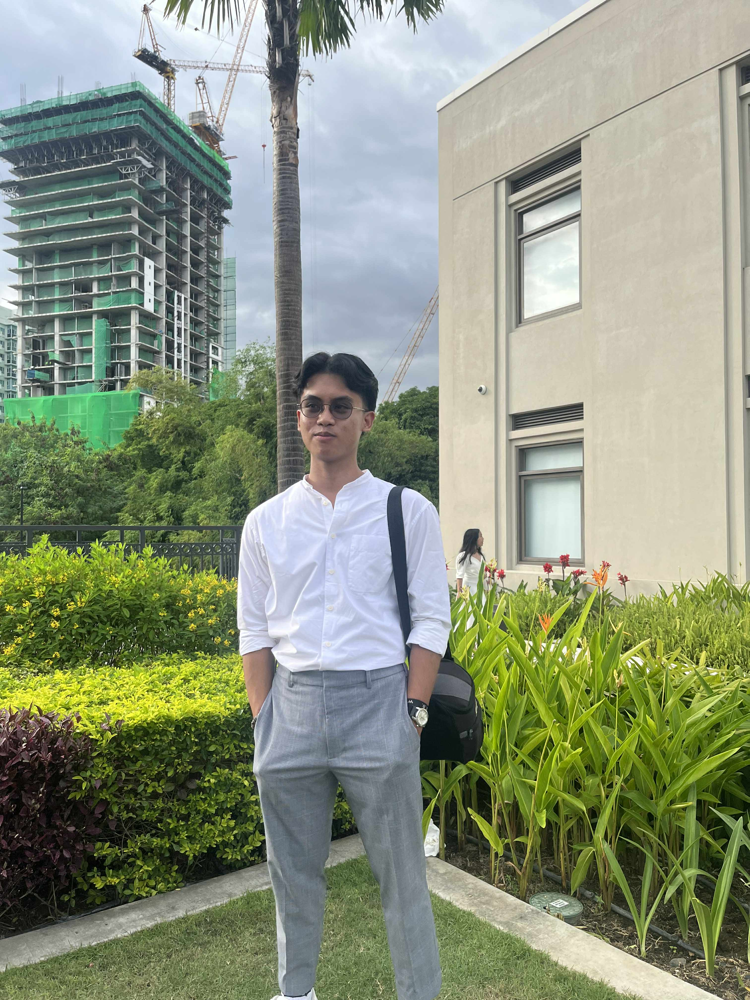

Behind the Art
Hello! I am a passionate artist dedicated to capturing the subtle nuances of life through various mediums. With a focus on emotional resonance and visual storytelling, my work aims to bridge the gap between reality and imagination.
My journey began with a pencil and paper, and has evolved into a multi-disciplinary exploration of digital art, photography, and traditional painting. I believe that every stroke, every capture, holds a piece of a larger narrative waiting to be told.